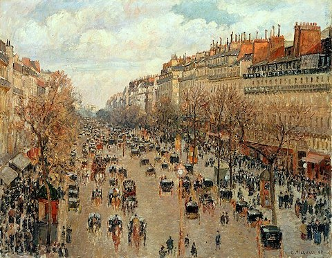
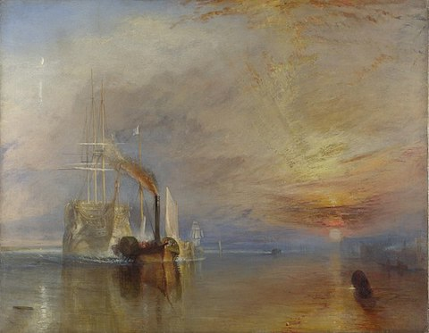
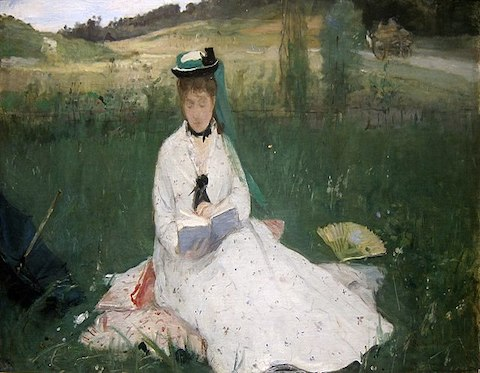
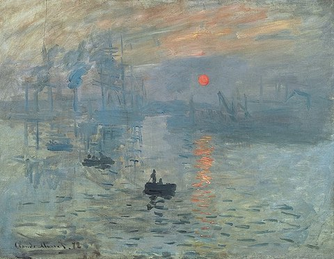
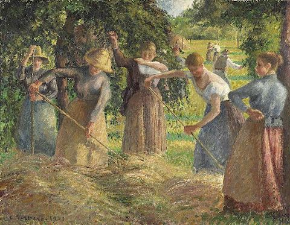
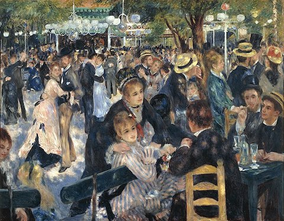

Impressionism
In 1874, a group of artists called the Anonymous Society of Painters, Sculptors, Printmakers, etc.
organized
an
exhibition in Paris that launched the movement called Impressionism.

The Garden at Sainte-Adresse is a painting by the French impressionist painter, Claude Monet
While conservative critics panned their work for its unfinished, sketchlike appearance, more
progressive
writers
praised it for its depiction of modern life.

This painting is one of 14 views of the Boulevard Montmartre in Paris that Camille Pissarro painted in 1897.
Their work is recognized today for its modernity, embodied in its rejection of established
styles,
its
incorporation of new technology and ideas, and its depiction of modern life.

This is the last journey of the Fighting Temeraire, a celebrated gunship which had fought valiantly in Lord Nelson's fleet at the battle of Trafalgar in 1805 painted by the English artist Joseph Mallord William Turner, painted in 1838.
Below are some more examples of Impressionism.

In 1874, this painting was featured in the groundbreaking first Impressionist exhibition, where it was titled La lecture. Titled Reading by Berthe Morisot.

Around the month of November in 1872, Claude Monet completed this work in just a few hours, in his hotel room overlooking the Port of Le Havre.

Hay Harvest at Éragny is a 1901 painting by French Impressionist painter Camille Pissarro depicting the hay harvest in the French commune of Éragny-sur-Epte.

Bal du moulin de la Galette is an 1876 painting by French artist Pierre-Auguste Renoir. It is housed at the Musée d'Orsay in Paris and is one of Impressionism's most celebrated masterpieces.